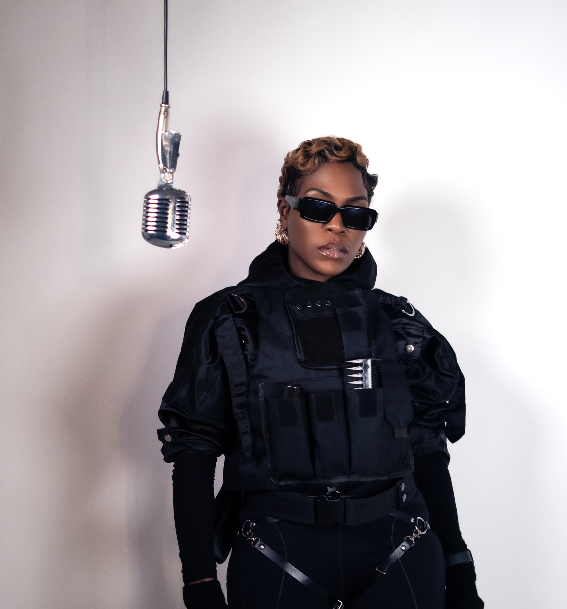

London · Independent
Taymah Hendi
The new single
Zero To 40
Pre-save now
“Believe it or not, this song is about a car.”

London · Independent
The new single
“Believe it or not, this song is about a car.”

Hear it first
Taymah Hendi · 30-second preview
Live
Friday 4 September 2026 · London · Secret location
An intimate room, no barrier, no setlist safety net. Zero To 40 played live.